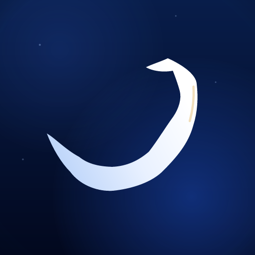
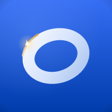
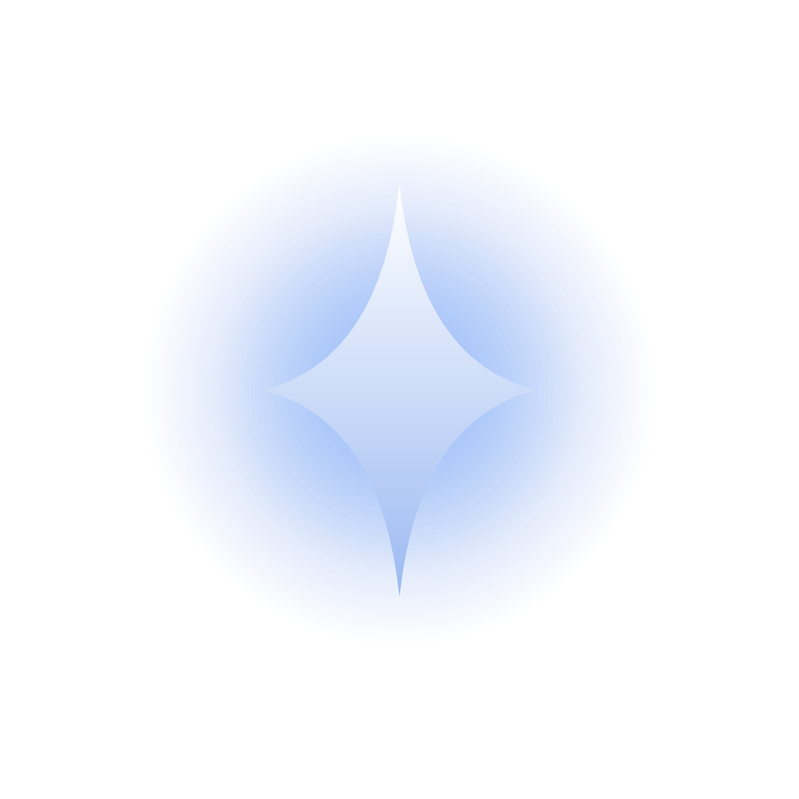
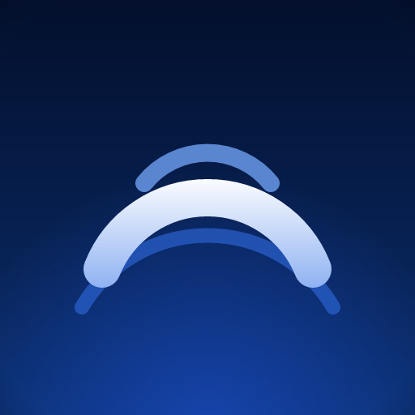
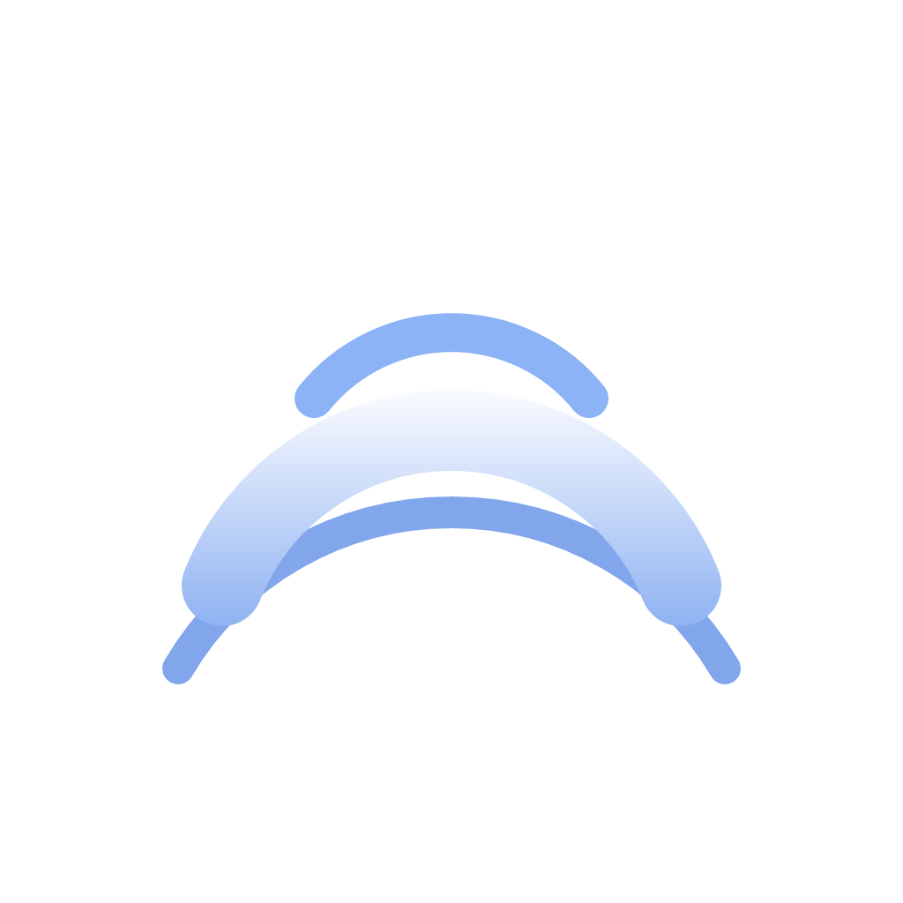

SVG 矢量源（1024 全出血方形，主形置于中央 ~66% 安全区）→ resvg 真实光栅导出。 48px 行为真 48 像素渲染，非浏览器缩放，可直接作桌面辨识度验收。 六稿无文字、无牙齿主体、无医疗符号；A/B/D 亮渐变家族，C/E/F 午夜恒光家族。

无限环带 × 星牙合一（你指定的方向）
一笔不断开的横置环带——坚持的闭环；环的交点上栖着一颗光体： 上半是四芒星光，下半收拢成根形，「似星又似牙冠带根」的抽象双关，仅此一处、含蓄克制。 远读整稿亦如冠冕镶珠：恒 = 永恒，冠 = 无声的牙科余韵。
底色：品牌渐变 #366EF4 → #003CAB（135°）｜主体：白 → 淡蓝｜点缀：纯蓝家族

自适应图标分层合成演示一枚不断开的圆环 / 轨道
永恒的最简符号：一枚微微倾侧悬浮的环，贵金属白的环身， 香槟金流光扫过外缘，一粒星火停驻——光线经过永恒的那一瞬。 金为点缀实验，可整支移除回归纯蓝。
底色：品牌渐变 #366EF4 → #003CAB（垂直）+ 左上柔光｜点缀：香槟金微光

自适应图标分层合成演示恒星 = 永恒之星（深夜恒光方向）
中文里「恒星」字面即永恒之星——无需文字，意象自明。 午夜蓝幕上一枚恒久发光的四芒星，光晕层层如深空灯塔：长亮，不灭。 与 App 界面的极光氛围同源，疏星为底，拒绝一切多余。
底色：午夜蓝（径向）#0E2E66 → #020C22 + 极光余晖｜主体：白 → 冰蓝

自适应图标分层合成演示一笔画完又回到起点的连续曲线
一条不断开的线：起于地平，翻过两座山（左低右高，进阶之山）， 落回大地，闭合成环——「坚持」的书写本身。 线顶走势极含蓄地暗合山峦与冠形起伏，属允许的抽象双关，不作主体。
底色：深蓝垂直渐变 #2A5FE3 → #002D7E｜主体：白 → 冰蓝单线

内部代号「白龙」的抽象化（彩蛋向）
一条单笔流动的白色飘带：尾梢上挑、腹部饱满、昂首破线回望—— 无鳞无目，纯以动势作龙。香槟金一线为外缘鳞光（点缀实验，可移除）。 午夜蓝幕 + 右下极光余晖 + 疏星，深夜方向。
底色：午夜蓝 #081D4A → #02081E + 右下极光余晖｜主体：白飘带｜点缀：香槟金鳞光

自适应图标分层合成演示
持续升起的流动光弧（与 App 界面同源）
三道弧自夜幕逐层升起：远弧最淡、主弧最亮最壮、近弧最高—— 一段持续不断的光，光在持续，夜在退去。 App 界面本身即极光渐变氛围，图标与其气质一脉同源。
底色：夜幕 #030F2C → #0A2E6E + 地平线辉光（自底缘升起）｜主体：白主弧 + 蓝回声弧

自适应图标分层合成演示